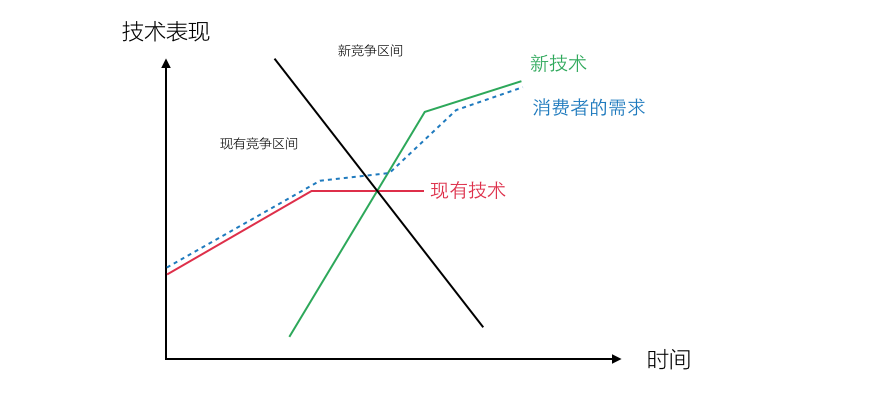

我一直相信知识工作者的成长路径，无论是程序员或是设计师，从信息的收集者、开始分析信息形成逻辑、在逻辑上包装内容、把内容形成产品、最终从产品中抽象出形态、归纳原则、总结规律，而战略（Strategy）正是成长路径中重要的一环。
当我重新阅读《HBR's 10 Must Reads - On Strategy》时发现，经过几年的积累，对「战略」一词有了新的认识，这便是此系列《战略十篇》的初衷——重新梳理对「战略」的理解。相信无论是产品设计者、创业者、企业管理者，在其中都能找到帮助。
首篇来自管理战略大师Michael E. Porter开宗明义的一篇《何为战略（What Is Strategy）》
经营效率不是战略
日本企业在上世纪70和80年代之间建立了一场「经营」革命，诸如TQM（Total Quality Management）全面品质管理、TPS（Toyota Production System）丰田生产方式等先进生产和管理手段，使得日本人的产品在相当一段时间内成为平价高质的代名词。追求一致性、拥有服从和执行精神的日本人将经营效率（Operational Effectiveness）推高到一个难以企及的高度，并引领了一个时代。
而之后的20年，世界经济GDP总量从1980年到2014年增长了7倍，期间2004年《经济学人》的一份报告中显示，90%的受访者将外包作为其重要的成长战略，产品中70%至80%的部分由外包制造，新技术和全球化的红利，又将全世界企业的经营效率提高到了新的高度。
企业们竞相利用合并和收购来获得竞争对手的经营效率，世界范围的合并和收购（M&A）的总额从1985年到2014年间增长了10倍（见下图）。

在很长一段时间，从制造和流水线管理、到全球化外包、再到合并收购，经营效率成为企业战略的核心，管理者们思考的往往是如何将生产线的效率推高到极致、或是寻找更低成本的外包地；管理咨询者们不遗余力地制造各种管理框架、基线、指标、流程、并包装各种「最佳实践（Best Practice）」帮助管理者继续推高经营效率；行业软件巨头推出各种以经营效率为核心的企业级应用软件或制造科技。
然而，经营效率的持续提升并不足以获得持续的竞争力，日本公司被认为是世界经营革命的启动者，并一度靠此超越苏联成为世界第二大经济体（1978年），但被标以「鲜有战略」的标签，在经营上以追随、复制、收购竞争对手为目标，不断提升经营效率，在文化上追求统一性和执行，当外部环境发生重大变化时，即1985年的广场协议，日本企业随整个日本经济进入「失去的十年（Lost Decade）」，甚至失去的二十年。
管理者们意识到，企业所遇到的环境发生了前所未有的变化：
- 全球经济一体化造成的宏观经济连锁反应，例如用日本经济补贴美国在上世纪80年代中期的巨额贸易赤字；
- 新技术的发展使得一切经营效率手段变得容易复制、全球外包资源的标准化和高流动性，使得竞争容易趋于同质化；
- 新兴市场国家消费升级使全球市场需求更迭更加迅速。
至少日本人无法用最先进的管理和制造方式应对全球经济环境的变化，真正的竞争力也许在一定时间内来自于经营效率，然而当：
- 随着技术、高技能工作者数量、外包服务的发展，进入高经营效率区间（Productivity Frontier）的成本更低；
- 技术突破带来的颠覆性创新，竞争区间发生转化（下图）；

经营效率则不足以应对，因此以经营效率为核心的企业战略在当前环境下应该被重新思考，战略不应该与经营效率划等号。那么战略究竟是什么？
战略是独特的企业行为
传统管理者认为，一个独特的「定位（Positioning）」是竞争力的核心，但事实上，在一个多元的市场、经济、消费者、和技术环境下，「定位」过于静态，而真正保持企业核心竞争力的事实上是「独特的企业行为」。
文章中讲述了美国西南航空的案例，在成立的伊始有这样一个故事：
1967年达拉斯的一个小餐馆里，在一个白色的餐巾纸上画着三个城市之间航线的草图。这是罗林·金在与约翰·帕克讨论之后向凯莱赫提出的建议。围绕着这场餐巾纸发生了以下对话：「赫布，我们开设一家航空公司吧？」 「罗林，你疯了吧！我们就这么办吧！」「我们为什么不能创立这样一家航空公司，每班飞机的票价很低，但是每天飞许多航空，以取代其他航空公司每天只飞几次但是每班票价都十分昂贵的做法呢？」
之后，西南航空坚持只是用波音737作为唯一机型、不可思议地完成15分钟过站提高飞机利用率、坚持一种舱位而保持低票价、坚持只在中型城市和大型城市的第二机场开设航班，更为独特的是，西南航空是美国自1973年以来唯一保持每年都盈利的航空公司。
 （Copyright: http://www.alternet.org/files/story_images/southwest-airlines.jpg )
（Copyright: http://www.alternet.org/files/story_images/southwest-airlines.jpg )
这里的每一个选择，即企业行为，都是西南航空独特性的一部分，而到底是成功的经营给她带来独特性、还是独特性带了她经营上的成功，我们无法定论，但至少，观察每一家成功的企业，真正的独特性都是「从头到脚」的不同。
虽然「定位」过于静态，但依然是构建企业行为的核心。有三种方式来建立独特的「战略性定位」：
通过独立产品或服务细分（Variety-based）
通过独立产品或服务细分最典型的例子是Amazon Echo，这种细分从现有产品或服务的区分度出发，而非消费者划分，针对相同的需求建立了一种新的产品或服务方式。一个全新的产品品类、一种突破式的交互方式、以及与Amazon现有生态和资源无缝的对接，这都使Amazon Echo形成一种独特的战略性定位。

通过特定客户群细分（Need-based）
这种细分通过特定客户群出发、尝试满足其所有相关需求，宜家便是最佳范例，恐怕全世界再也难以找到第二家宜家，它所针对的就是那些对价格敏感却又想享受优秀设计、并对家具质量没有长久需要的年轻客户。围绕这一客户群体，宜家建立的所有体系，例如自组装、自由展示和尝试、自取货等等，都体现了对这一客户群的深刻理解。
通过独特方式细分（Access-based）
针对某一细分客户的特定需求提供特定的服务方式，也许这些客户的需求有所类似，但是如何满足这些需求的方式则有所不同。例如文章中提到的Carmike电影院只针对20万人以下的城镇消费者，在选址、宣传方式、硬件配套、播放技术等等都有针对性的策略，使得其曾一度成为全美第二大电影连锁品牌（受互联网冲击，Carmike目前已下降至全美第四）。
有效战略的真正奥秘在于：
- 选择一个独特的细分方式，要么基于独特的产品或服务、或是独特的客群、或是服务某一客群的独特方式；
- 建立一个完整且独特的企业行为（Company Activities）集合，并区分于自己的竞争对手。
尽管如此，独特定位和与之匹配的独特企业行为依然不能够推导出商业成功，还有两点需要企业管理者思考。
战略是妥协
到底是什么阻止你的竞争对手复制？你的技术能力吗？不是，他们可以挖走你的技术团队，或者使用更好的技术；你的管理手段吗？不是，他们可以轻易地获得你所有的过程文档；你的企业架构吗？不是，他们也许用着跟你一样的咨询公司；你的合作伙伴吗？不是，就像你击败你之前的竞争者一样，偷走你的合作伙伴。
真正你竞争对手很难偷走的，是你为获得这种独特性所付出的「妥协（Trade-offs）」。
2013年ThoughtWorks公司在全球范围内取消了所有销售的销售分成，这是专业服务领域罕见的做法，而这也是这家公司为了自身的独特性做出的妥协。ThoughtWorks的核心定位是帮助缺少技术能力的企业通过技术完成非凡的使命，那么销售就应该尝试更加具有挑战性的项目，并倾向于与客户建立更加长久的伙伴关系，而非通过更容易成单的项目（相对「平庸」）获得快速分成。
We are passionate technologists. We provide software delivery, pioneering tools and consulting for organizations with ambitious missions. -ThoughtWorks公司的独特定位
而妥协的结果也相当明显，销售人员的士气也许收到打击，强销售的文化不容易建立，也难以获得更好的直接销售收入。
因此，当竞争者尝试复制这间公司的独特性时，例如针对大型客户、获得业界最具技术挑战性的项目，必须得思考是否能够承受得起「妥协」带来的后果。
通常「妥协」来自于以下几个方面：
- 不持续的公众形象和品牌；
- 被挑战的企业行为，独特性意味着现有企业行为，包括过程、文化、技能、风格、价值观、甚至质量需要被妥协；
- 管理层面对「极不靠谱」的独特性的容忍程度。
如果你是创业者或是企业新战略的建立和执行者，请思考，竞争者无法复制的，是你所放弃的「妥协」吗？
持续性和适应性是战略的核心优势
建立一个独特的定位，规划和实施一系列企业行为在其之上，放弃一些因此而「妥协」的东西，你已经基本上完成了战略的前三步，而第四步，则是保证这些企业行为具备持续性和适应性。
当我们看到西南航空的成功，却往往无法了解其背后各种企业行为之间的相互作用，下图展示了西南航空的企业行为图：

每一个圆圈内的行为，都与相连圆圈中的行为相互作用，例如：限制性乘客服务（不能选座）、才有更频繁的起飞、才有更高效的地勤人员、才有更高利用率的飞机、才有更低的票价、最后使得限制性乘客服务依然获得优秀的客户满意度。因此，只有当所有的元素集合在一起工作的时候，才有了西南航空的成功。
规划归规划，各种企业行为中如何配合，实现「正反馈」，便需要在现有企业中寻找适应性（Fit），这种适应性决定了整个战略（作为一个系统）持续地进行运作。
适应性（Fit）的重要性往往被低估，通常有三种适应性的方式：
- 和已有企业行为配合，不捣乱；
- 借助已有的企业行为，强化；
- 超越强化形成组织级别的支持，借势。
在处理适应性的过程中，自然要尊重已有上下文、做出妥协和让步、吸收现有企业行为作为强化，这个过程越成功，整个行为系统就越持久、越具备竞争力。
战略为何失败
战略很容易被人理解为纸上空谈的高瞻远瞩，事实上，战略有着完整的系统结构，战略设计者的目标，就是在组织里尝试建立这一系统结构，理解这一系统架构后，战略失败的原因不言自明，它们即：
- 没有独特的定位；
- 没有建立与独特定位匹配的企业行为；
- 不愿意放弃和面对妥协；
- 没办法与现有组织进行适配。
这对于企业的领导者而言提出了新的要求，从逻辑上来看，中低层管理者很难获得企业战略方向的同理心，领导者的重要职责是在寻找到一个合适的定位、建立独特的企业行为系统、不断桥接、调教、化解、强化、简化、妥协，最终完成这一独特行为在现有企业环境中的适配，从而形成核心竞争力。领导团队对于战略的理解和处理能力决定企业是否朝真正战略目标前进，而不仅仅是在经营效率上竞争。
对成长的渴求（The Demand for Growth）也可能成为战略失败或缺乏战略的原因。成长最直接的方式，正是实实在在、可执行、可复制的企业行为，这样的案例不胜枚举。成长带来最大的问题是独特性的模糊化，服务、需求、客户、功能在不断扩展，相对应的企业行为也在不断扩充。当你有30位乐人、10种乐器在你的乐团时，指挥也许对你来说迎刃有余，如果有300位乐人、500种乐器呢？
而没有线性成长的眼前利益，就没有承受失败的空间、以及勇于突破的底气，领导者需要在线性增长和投资未来间进行权衡，阻止公司同质化、梳理企业行为、并在市场趋势中对投资做出决断。
因此，企业领导者保护着企业战略的成功，其特质应该是：
- 有独一无二的野心；
- 对市场有独特的理解和敏锐度；
- 懂得梳理、协调、桥接、强化各个企业行为间的关系；
- 懂得引入着眼未来的新的企业行为；
- 懂得放弃和妥协；
- 权衡线性增长的最佳实践和战略投资间的关系；
- 培养具备高适应力、敏锐度的特殊战略型人才。
写在最后
本文最早读于2010年，5年后重新阅读，有了全新的体会，对个人而言，每个人依然是自己成长的战略规划者，它也符合本文所提到的逻辑：1）建立独一无二的价值定位；2）建立一个行为系统，输出这种价值；3）懂得在企业内权衡和放弃；4）从不给别人添乱开始、学会借助企业已有的行为模式、到跟随企业的大势。
对企业内部创新而言，我所经历过的内部创业过程，无一不是跟随这样的思路，从价值定位开始，死死守住新业务的独特性，努力建立一个符合当前企业上下文的适配，形成一套完整的战略系统。
对创业者而言，应该理解的是独特性才是真正的护城河，独特性应该保证企业行为和定位的一致，并学会避免掉入「成长陷阱」，当你的企业慢慢跟你的竞争对手一样，发布着难以区分的产品、一样的企业文化、员工无缝跳槽，最后一定是零和游戏，而这样的初创企业，一眼望去，比比皆是。
你、你的事业、你的企业，创造并保护你的「独特性」，这就是我所理解的战略。